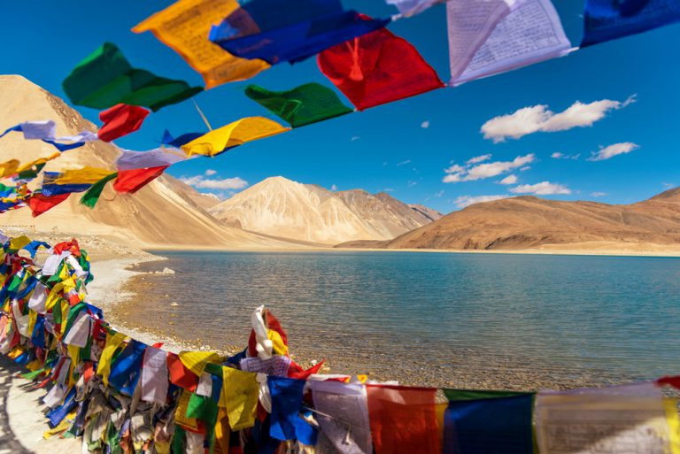

TAJ MAHAL
The Taj Mahal is an ivory-white marble Islamic mausoleum on the
south bank of the Yamuna river in the Indian city of Agra.
It was commissioned in 1632 by the Mughal emperor Shah Jahan to house the
tomb of his favourite wife, Mumtaz Mahal; it also houses the tomb of Shah Jahan himself.
|
 LEH LADAKH
Leh, a high-desert city in the Himalayas,
is the capital of the Leh region in northern India’s Jammu and Kashmir state.
Originally a stop for trading caravans, Leh is now known for its
Buddhist sites and nearby trekking areas. Massive 17th-century Leh Palace,
modeled on the Dalai Lama’s former home (Tibet’s Potala Palace),
overlooks the old town’s bazaar and mazelike lanes.
|
 GOLDEN TEMPLE ,Amritsar
Amritsar is a city in the northwestern Indian state of Punjab,
28 kilometers from the border with Pakistan. At the center of
its walled old town, the gilded Golden Temple (Harmandir Sahib)
is the holiest gurdwara (religious complex) of the Sikh religion.
It’s at the end of a causeway, surrounded by the sacred
Amrit Sarovar tank (lake), where pilgrims bathe.
|
 JAISALMER FORT
Jaisalmer Fort is situated in the city of Jaisalmer,
in the Indian state of Rajasthan. It is believed to be one of
the very few "living forts" in the world, as nearly one fourth of
the old city's population still resides within the fort. For the
better part of its 800-year history, the fort was the city of Jaisalmer
|